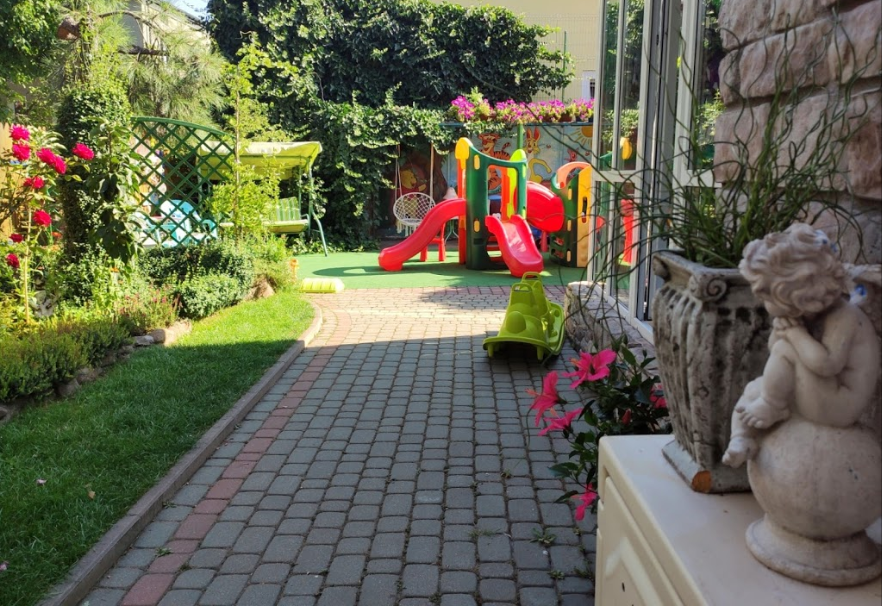

Akademia Promyk

About
Akademia Promyk is Polish kindergarten. I created a website which main focus was design matching the theme of the website and good advertisment and showing good sides of the object. To maximalize advertising potential I had to focus on good SEO (I aimed for 100/100 in Google Lighthouse audit). Important requirement of this website is possibility to edit content by non-technical person with simple use of CMS. One of the most important upsides of this kindergarten is colorful garden and the second one are really interesting activities - to show this impressive aspects interactive gallery is nessecary.
Technologies
I decided to use GatsbyJS because of its impressive SEO potential and good optimization of images. To manage content of the website I used DatoCMS combining with GitHub Actions to trigger build website on the server.
You can see project live here: link do strony
Project is hosted on netlify at this moment and not used in production.
Website will be used realeased in next academic year - September 2021